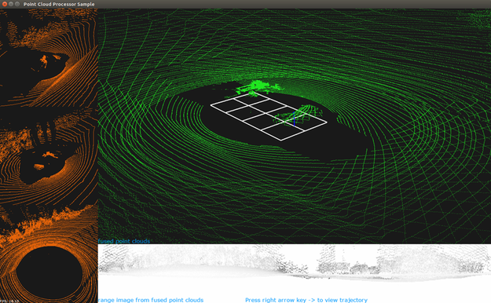
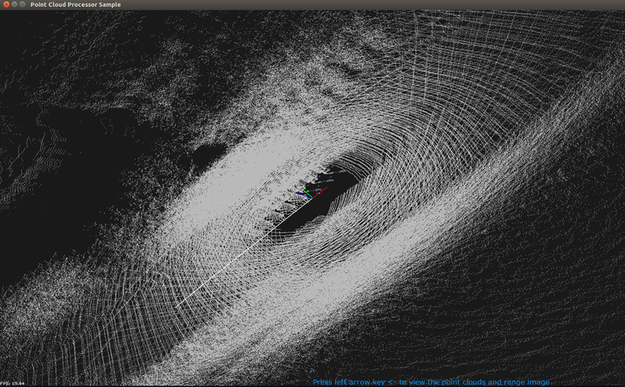

This sample demonstrates how to use point cloud processing APIs for primitive processing.
The sample fuses point clouds from two [VELO_HDL32E] recordings and one [VELO_HDL64E] recording. It then generates the range image and organized point cloud data. This data is used to compute the rigid transformation between two temporally adjacent point clouds.
The sample only supports recorded data as input. It does not support live data. Recordings from other types of Lidars are not guaranteed to work.
./sample_pointcloudprocessing --rigFile=[path/to/rig file/]
--numFrame=[max_frames_to_process]
--maxIters=[max_icp_iterations]
--displayWindowHeight=[window height in pixels]
--displayWindowWidth=[window width in pixels]
Where:
--rigFile=[path/to/rig file/]
Path to the rig file.
The rig file contains all the sensor configurations required for initialization.
Default value: path/to/data/samples/pointcloudprocessing/rig.json
--numFrame=[integer]
If specified, the sample processes frames up to this integer. It processes all frames by default.
Default value: 0
--maxIters=[integer]
The maximum number of iterations for ICP.
Default value: 12
--displayWindowHeight=[window height in pixels]
Defines the sample's window height in pixels.
Default value: 900
--displayWindowWidth=[window width in pixels]
Defines the sample's window width in pixels.
Default value: 1500
The following interactions with the sample are available at runtime:
./sample_pointcloudprocessing --maxIters=20
In this example, the sample uses default recordings and processes up to 20 ICP iterations.
The sample opens a window with several point clouds in different colors:
Pressing the right arrow key switches to the trajectory view, which renders the fused point cloud motion trajectory over time.  
For more details see Point Cloud Processing.